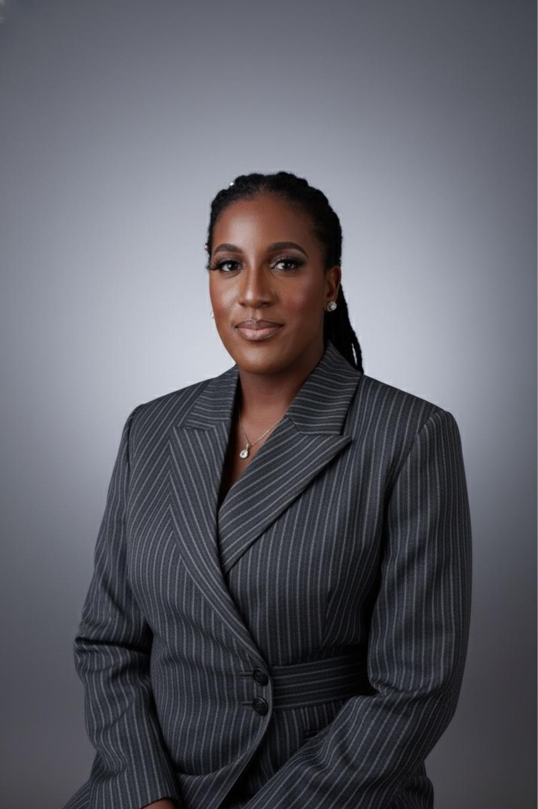

Camille N. Anidi, Esq. is a New York-licensed entertainment and intellectual property attorney with a practice spanning the United States, Africa and Europe.
She serves as Senior Attorney, International Division at The Law Offices of Robert A. Celestin, where she works on recording, publishing, distribution, licensing, intellectual property and commercial transactions involving artists and music businesses.
Her practice includes negotiating international agreements, advising on the protection and exploitation of music rights, and navigating the legal and commercial issues that arise when artists operate across different markets.
The firm’s past and present clients include Shaboozey, BNXN, Seyi Vibez, Vector, Darkoo, Sofiya Nzau, SABRI, Jazzwrld, Thukuthela and GL_CeeJay, among others.
In addition to her legal practice, Camille is an Adjunct Professor of Law at Southwestern Law School, where she taught International Music Law in London in 2026. She has participated in international industry conferences, university programs and professional forums addressing music law, intellectual property and the business of entertainment.
Camille is the author of Claim Your Crown: A Creative’s Guide to Confidence, Genius, and Self-Worth, and she writes On the Record.
My father is Nigerian, so you already know what he used to say. Education is the key to success. I understand now that he wasn’t talking about certificates. He was talking about not being the person in the room who doesn’t know.
That is the standard behind the practice and behind the teaching. There are not enough lawyers who move fluently between the New York deal and the Lagos reality, and not enough artists who know which questions to ask before the money arrives. Neither is a talent shortage. Both are training gaps, and training gaps can be closed.